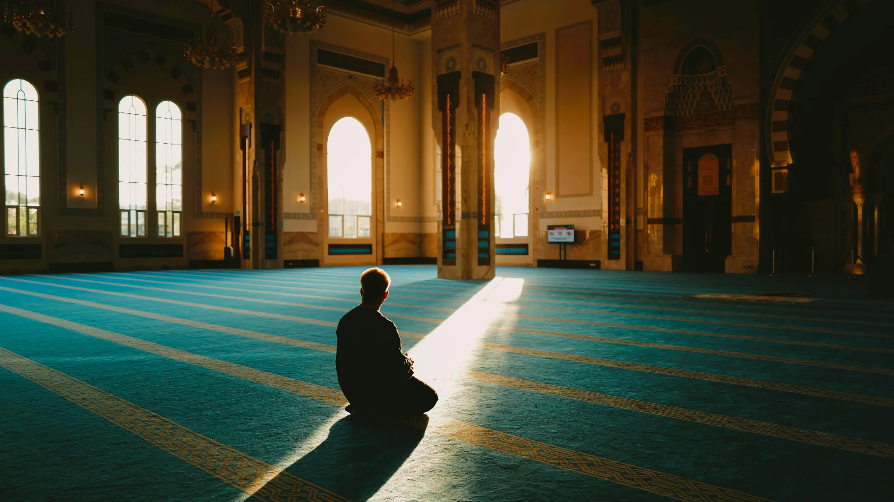

Satu Harapan,
Pemulihan Menyeluruh
One Stop Centre for Addiction (OSCA) merupakan pusat sehenti rawatan perubatan bersepadu di bawah Kementerian Kesihatan Malaysia yang komited untuk menyediakan saringan, intervensi, dan rawatan terapeutik berstruktur bagi ketagihan substans dan bukan substans. Diterajui oleh Unit Kawalan Penyakit Tidak Berjangkit (NCD) di Jabatan Kesihatan Negeri Perlis serta di bawah pentadbiran Unit Kawalan Penyakit Tidak Berjangkit (NCD) di Pejabat Kesihatan Daerah Kangar.
Objektif Utama Kami
"Untuk menyediakan perkhidmatan rawatan dan intervensi yang komprehensif, holistik dan bersepadu bagi merawat semua jenis penyalahgunaan dan ketagihan substan serta ketagihan-ketagihan yang lain."
Objektif Khusus
Pendekatan "Bio-Psycho-Social-Spiritual"
Pendekatan rawatan bersepadu kami menyasarkan pemulihan daripada segenap sudut kehidupan individu [7].
Biologikal
Rawatan klinikal komprehensif berasaskan ubat-ubatan (pharmacotherapy) untuk menyokong kestabilan biokimia tubuh pesakit.
Psikologikal
Sesi kaunseling sokongan, psikoterapi, dan terapi tingkah laku yang membina kesedaran perubahan pesakit secara positif.
Sosial
Sokongan membina jaringan sosial yang sihat, bimbingan kerjaya, asimilasi komuniti, dan peranan aktif keluarga.

Spiritual
Penerapan nilai keagamaan dan pengisian rohani untuk mencegah risiko gelincir semula (relapse).